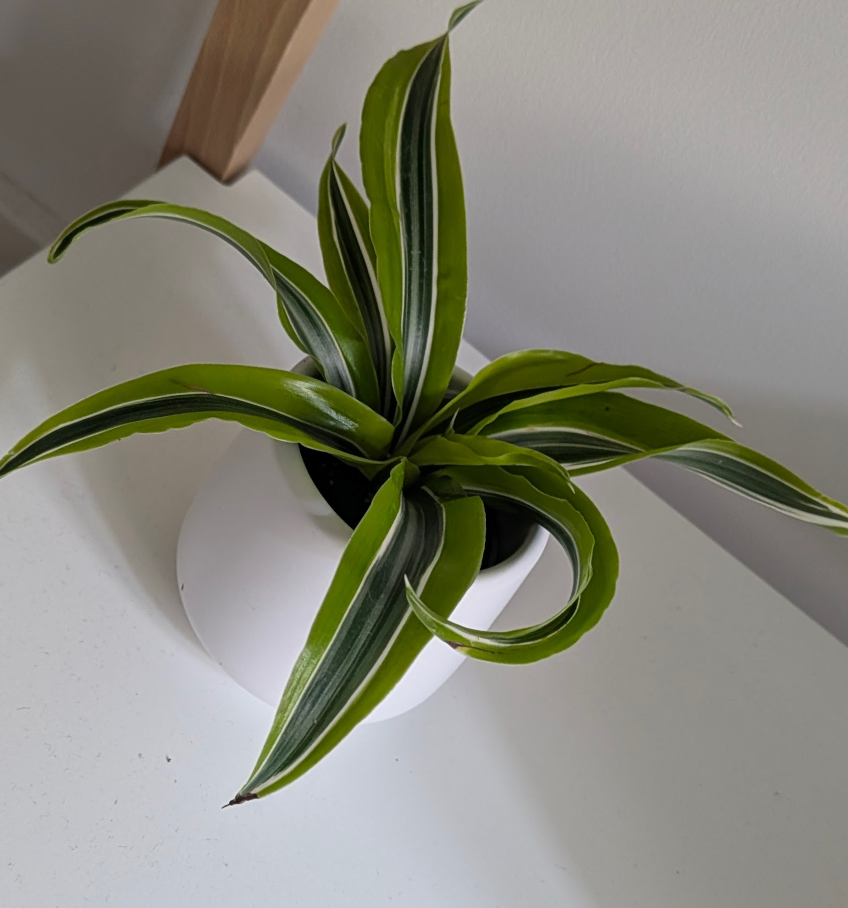

Spider Plant (Chlorophytum comosum)

Description
The Spider Plant is a beloved and adaptable houseplant, easily recognized by its arching, grass-like leaves that are often green with white or yellowish stripes. It's famous for producing long stems (stolons) from which small white flowers and miniature plantlets, known as "spiderettes," develop. These spiderettes can be easily propagated to create new plants.
Care Instructions
- Light: Prefers bright, indirect light but is adaptable to lower light conditions. Avoid direct, harsh sunlight which can scorch the leaves. Variegation may be more pronounced in brighter light.
- Water: Water thoroughly when the top 1-2 inches (2-5 cm) of soil feel dry. Allow excess water to drain. They are fairly drought-tolerant but prefer consistent moisture during the growing season. Reduce watering in winter. Using rainwater or distilled water can help prevent brown leaf tips from fluoride/chlorine sensitivity.
- Soil: Use a general-purpose, well-draining potting mix.
- Temperature: Does well in average room temperatures between 13-27°C (55-80°F). Keep away from cold drafts.
- Humidity: Tolerates average household humidity but appreciates slightly higher levels. Brown leaf tips can sometimes indicate dry air.
- Fertilizer: Feed with a balanced liquid fertilizer diluted to half-strength every 2-4 weeks during spring and summer. Reduce or stop feeding in fall and winter.
Fun Facts
- Common Names: Airplane Plant, St. Bernard's Lily, Spider Ivy, Ribbon Plant.
- Origin: Native to tropical and southern Africa.
- Air Purifier: Often cited for its air-purifying qualities, helping to remove indoor pollutants like formaldehyde and xylene.
- Easy Propagation: The "spiderettes" make propagation incredibly simple – just snip them off and place them in water or soil to root.
Toxicity
Considered non-toxic to humans, cats, and dogs, making it a safe choice for households with pets and children. (Though cats may be attracted to chewing the leaves).